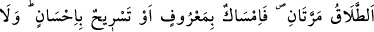
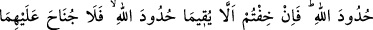
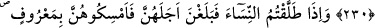
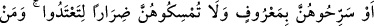
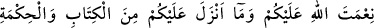
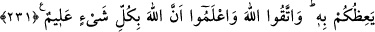
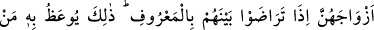

BOŞANMA AHKÂMI
229. Boşama iki defadır. Bundan sonrası ya iyilikle tutmak ya da güzellikle
salıvermektir. Kadınlara verdiklerinizden (boşanma esnasında) bir şey almanız size
helâl olmaz. Ancak erkek ve kadın Allah’ın sınırlarında kalıp evlilik haklarını tam
tatbik edememekten korkarlarsa bu durum müstesna. (Ey mü’minler!) Siz de karı
ile kocanın, Allah’ın sınırlarını, hakkıyla muhâfaza etmelerinden kuşkuya
düşerseniz, kadının (erkeğe) fidye vermesinde her iki taraf için de sakınca yoktur.
Bu söylenenler Allah’ın koyduğu sınırlardır. Sakın onları aşmayın. Kim Allah’ın
sınırlarını aşarsa işte onlar zâlimlerdir.
230. Eğer erkek kadını (üçüncü defa) boşarsa, ondan sonra kadın bir başka
erkekle evlenmedikçe onu alması kendisine helâl olmaz. Eğer bu kişi de onu
boşarsa, (her iki taraf da) Allah’ın sınırlarını muhâfaza edeceklerine inandıkları